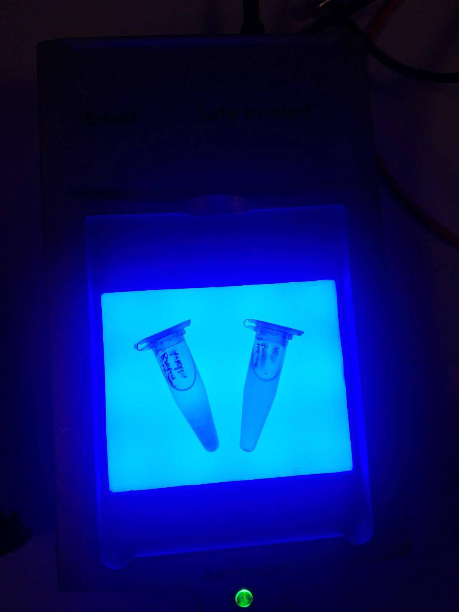
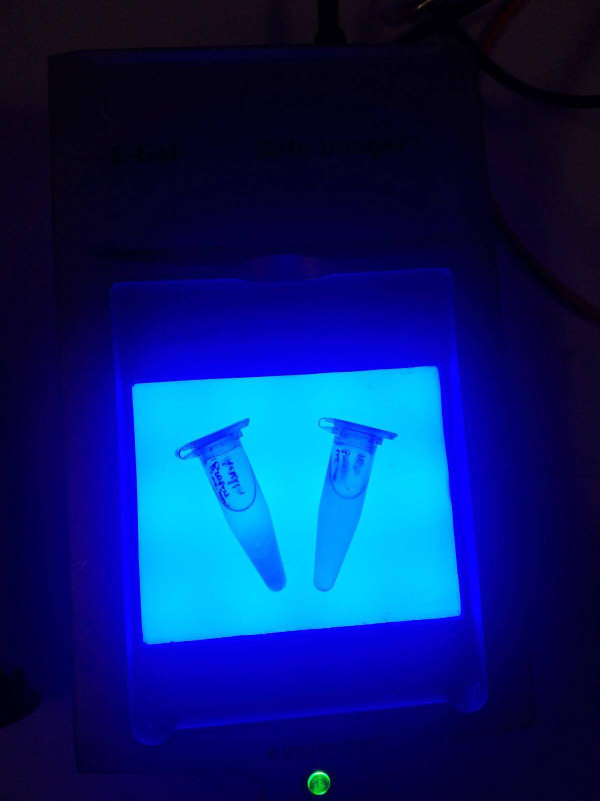

Results from our 3 applications that we have developed for optogenetics. All organic.
Barchitecture is a 3D printing technology based on 2 suspended colonies of E. Coli cells that display on their surface one of the 2 binding partners that form a strong covalent bond: SpyTag or SpyCatcher. By using light in the form of lasers, one ensures that only in the desired location in the cell population covalent bonds will be formed between bacteria. Once a 3D structure is formed, light induces the production of PHB, which accumulates in the form of granules inside cells. Cells then use a type-2 system to secrete the PHB, with the granules being cross-linked into a solid shape by a photoinitiator.
Barchitecture is a 3D printing technology based on 2 suspended colonies of E. Coli cells that display on their surface one of the 2 binding partners that form a strong covalent bond: SpyTag or SpyCatcher. By using light in the form of lasers, one ensures that only in the desired location in the cell population covalent bonds will be formed between bacteria. Once a 3D structure is formed, light induces the production of PHB, which accumulates in the form of granules inside cells. Cells then use a type-2 system to secrete the PHB, with the granules being cross-linked into a solid shape by a photoinitiator.
Our bacterial bulb uses E. Coli to luminescence only during night time and cyanobacteria to provide nutrients for the bioluminescent bacteria. We incorporate the Lux operon into E. coli and suppress its activity with the EL222 photosensitive protein. We use an existent glucose secretion system for the cyanobacteria (reference).


 
